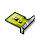
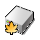
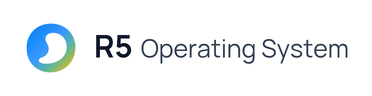

Alle verhoudingen, constructiegrids, clearspace, padding, kleurcodes en UI-maatlijnen voor R5 Operating System.
Het besturingssysteem heet R5 Operating System, kort R5. Het combineert het reactieve, menselijke ontwerp van BeOS en Haiku met een eigen, moderne 64-bit architectuur.
Gebruik in alle logo's, venstertitels, het opstartscherm, documentatie, What's new en website-teksten uitsluitend:
De string R5OS is uitsluitend een technische identifier en mag
nooit in een logo, splash screen of zichtbare UI-titel verschijnen:
R5_OS_VERSION), bestaande logstrings.
De Golf-Steen (The Wave Pebble) is opgebouwd op een 100 × 100
coördinatengrid (viewBox="0 0 100 100"). De buitenste contour beslaat exact
84 × 84 eenheden (x: 8..92, y: 8..92), waardoor er rondom
een ingebouwde optische marge van 8u (8%) aanwezig is.
| Onderdeel | Coördinaten / Waarde | Toelichting |
|---|---|---|
| Canvas / ViewBox | 0 0 100 100 | Vierkante eenheidsmatrix; schaalt verliesvrij naar elk pixelformaat. |
| Buitenste Pebble-contour | x: 8..92, y: 8..92 (84 × 84 u) | 4 gesloten kubische Bézier-segmenten met 8u optische marge tot de rand. |
| Binnenste S-Golf (Negatieve Ruimte) | x: 26..77, y: 24..77 (51 × 53 u) | Uitgesneden via fill-rule="evenodd"; vormt subtiel een S-golf en abstracte 5. |
| Specular Top-Left Highlight | M22,29 C30,17 44,12 58,14 | Witte glanslijn (stroke-width: 2.5u, opacity: 0.38, zachte Gaussische blur in raster-exports). |
| Standaard Clearspace | Minimaal 0.25 × D rondom | Vrije ruimte rond het losse symbool op web, print en marketing. (Uitzondering: Deskbar-knop 28×22 px). |
| Minimale Weergavegrootte | 16 × 16 px (UI) / 20 × 20 px (Deskbar) | Onder 64 × 64 px wordt het symbool zonder slagschaduw gerenderd voor maximale scherpte. |
De horizontale lockup combineert het Wave Pebble-symbool links met R5 in Manrope Bold (700) en Operating System in Manrope Regular (400) op exact dezelfde tekstbasislijn.
| Parameter | Relatieve Formule | About R5 Header (88 px hoog) |
Boot Splash (372 × 96 px) |
Master Logo (842 × 140 px) |
|---|---|---|---|---|
Symboolgrootte (S) |
0.72 × H (of 2.0 × CapHeight) |
60 × 60 px |
58 × 58 px |
101 × 101 px |
| Padding Rondom Symbool | 0.16 × H | 14 px (boven/onder/links) |
19 px (vert) / 22 px (links) |
22 px |
Afstand Symbool → R5 |
0.23 × S (0.16 × H) |
14 px (tekst start op x = 88 px) |
14 px (tekst start op x = 94 px) |
22 px |
Afstand R5 → Operating System |
0.09 × H | 8 px op dezelfde basislijn |
8 px op dezelfde basislijn |
13 px op dezelfde basislijn |
Korpsgrootte R5 (Manrope Bold) |
100% (Referentie T) | 28 px (#0F172A) |
31 px (#FFFFFF of #0F172A) |
50 px (#0F172A) |
Korpsgrootte Operating System (Regular) |
82% – 83% van T | 23 px (#334155) |
25 px (#CBD5E1 of #334155) |
42 px (#334155) |
| Subregel (Versie & Build) | 43% van T | 12 px (#64748B, basislijn +22 px) |
Geen versieregel op Boot Splash | Optioneel in card-lockup |
Klik op een kleurkaart om de Hex-waarde direct naar het klembord te kopiëren.
De merkgradiënt loopt onder een hoek van 135° (van 12%, 12%
linksboven naar 88%, 88% rechtsonder).
Manrope)
Manrope (distro/fonts/manrope/, SIL Open Font License 1.1)
is zowel het standaard desktop-lettertype van R5 als het officiële merklettertype.
| UI- / Merk-element | Gewicht & Bestand | Grootte | Tracking / Line-Height | Kleur (Licht / Donker) |
|---|---|---|---|---|
Woordmerk R5 |
Bold (700) • Manrope-Bold.ttf |
28 px (About) / 31 px (Splash) | -0.02em / 1.0 |
#0F172A / #FFFFFF |
Woordmerk Operating System |
Regular (400) • Manrope-Regular.ttf |
23 px (About) / 25 px (Splash) | -0.01em / 1.0 |
#334155 / #CBD5E1 |
| Versie- & Build-subregel | Regular (400) | 12 px | 0em / 1.35 |
#64748B / #94A3B8 |
| Venstertab & Box-titels | Bold (700) | 12 – 13 px | 0em / 1.2 |
#141414 op geel #F8CC26 |
| What's new Sectiekop | Bold (700) | 13 px | 0em / 1.4 |
Groen accent #2A8324 |
| Body / formulierlabels / lijsten | Regular (400) | 12 px | 0em / 1.45 |
#1E293B op paneelgrijs #EDEDED |
Exacte pixelmaten, marges en padding voor alle plekken waar het merk in R5 Operating System verschijnt.
De knop links in de Deskbar toont uitsluitend het abstracte symbool
(geen tekst "R5" of "R5OS").
distro/artwork/r5-os-deskbar.png (28 × 22 px RGBA).20 × 20 px gecentreerd op x = 4 px, y = 1 px.4 px links en 4 px rechts.
Volgt exact de horizontale About R5-lockup zonder hardcoded build- of architectuurtekst,
beschikbaar in zowel donker (#000000) als wit (#FFFFFF).
r5-os-splash.png & .bgr (107.136 bytes raw BGR).r5-os-splash-white.png & r5-os-splash-white-borderless.png (+ .bgr).58 × 58 px op x = 22 px, y = 19 px; gap 14 px naar R5.
Haiku toont tijdens het opstarten een iconenstrook (splash_icons.png) waarin zeven stappen doorlopen worden.
Voor R5 Operating System op een witte achtergrond (#FFFFFF) worden zeven losse, transparante
kleuriconen van 40 × 40 px gebruikt. Het generator-script (scripts/generate-splash-icons.py)
plaatst ze gecentreerd op wit, genereert automatisch de gedimde “nog niet”-rij in neutraal leisteengrijs, en bouwt de
308 × 80 px strip en raw BGR.



distro/artwork/boot_splash/icons/[1-7].png: Zeven transparante 40 × 40 px kleuriconen.distro/artwork/boot_splash/splash_icons_white.png: Volledige 308 × 80 px strip (boven: kleur, onder: grijs).distro/artwork/boot_splash/splash_icons_white.bgr: 24-bit raw BGR formaat voor de kernel framebuffer blitter.scripts/generate-splash-icons.py: Bouwscript dat op wit zet en de “nog niet”-rij genereert.De opstartschijf in Tracker en op het bureaublad krijgt de Golf-Steen als overlay-badge in het rechterbovenkwadrant van de bovenplaat.
brand-kit/r5-system-disk-*.png): badge = 46% van icoongrootte op (36%, 14%) met witte contrasterende achtergrondschijf.Pose.cpp): 45% van icoongrootte (geclampt 10..28 px) rechtsonder op het root-volume icoon.
Geen tweekoloms-split meer: alle drie de hoofdcomponenten lopen over de volle breedte
met 14 px vensterpadding (B_USE_WINDOW_SPACING).
88 px hoog, 14 px interne padding).+12 px gap): SysInfoView over de volle breedte.+14 px gap): BTabView (What's new, Credits, Licenses).Schrijf altijd R5 Operating System (met R5 in Bold en Operating System in Regular) of kort R5.
Gebruik nooit R5OS in het logo, het opstartscherm, de Deskbar of
About R5.
Plaats in de Deskbar uitsluitend het abstracte Wave Pebble-symbool
(20 × 20 px in 28 × 22 px).
Zet geen tekst naast het icoon in de Deskbar-knop; dat maakt de knop te breed en onrustig.
Lees R5_OS_VERSION en R5_OS_BUILD in
About R5 altijd dynamisch uit r5_os_version.h.
Het voorkeuren-steeksleuteltje (r5_settings_apply_prefs_overlay())
hoort alleen op Settings-modules, nooit op About R5.
Alle 25 bestanden staan klaar in distro/artwork/brand-kit/ en worden
gegenereerd met python scripts/generate-r5-artwork.py.
| Bestand | Afmeting / Formaat | Padding / Specificatie | Toepassing |
|---|---|---|---|
| r5-symbol.svg | viewBox 0 0 100 100 | 8u interne marge (84×84u actief) |
Canonieke master-SVG (GPL-3.0-or-later) |
| r5-symbol-1024.png t/m 16.png | 1024, 512, 256, 128, 64, 32, 22, 16 px | 4× supersampled RGBA; schaduw vanaf 64 px |
App-iconen, UI-badges, HiDPI weergave |
| r5-symbol-mono-white.png / dark.png | 512 × 512 px | Puur wit #FFFFFF & donker #0F172A |
Watermerken, monochrome afdrukken, embossing |
| r5-os-deskbar.png | 28 × 22 px | 20×20 px symbool op (4, 1) |
Deskbar leaf-knop (alleen symbool) |
| r5-os-logo.png / dark | 842 × 140 px | Transparante horizontale lockup (licht `#0F172A` & donker `#FFFFFF`) | Algemeen horizontaal R5-woordmerk (Manrope 700 & 400 op zelfde basislijn) |
| r5-os-logo.svg / dark | viewBox 0 0 490 84 | Vector-master van de horizontale lockup | Vector SVG-lockup voor web, drukwerk en marketing |
| r5-os-logo-r5-only.png / dark | 410 × 140 px | Korte lockup: [Wave Pebble] + “R5” (licht & donker) | Korte merkidentiteit waar de volledige naam niet past |
| r5-os-logo-stacked.png / dark | 380 × 260 px | Gestapelde verticale lockup (symbool boven, tekst eronder) | Verticale toepassingen, posters en splash mockups |
| r5-os-splash.png + .bgr | 372 × 96 px (107.136 B) |
Zwarte achtergrond #000000, kaart 356×80 px |
Standaard donkere Boot Splash PNG + 24-bit raw BGR |
| r5-os-splash-white.png + borderless | 372 × 96 px (107.136 B) |
Witte achtergrond #FFFFFF zonder build/AMD64-tekst |
Witte Boot Splash (met subtiele kaartrand & puur wit) + .bgr |
| r5-system-disk-128 / 64 / 32.png | 128, 64, 32 px | Isometrische schijf + 46% R5-badge op (36%,14%) |
System Disk icoon met R5-overlay (air/OS-stijl) |
| r5-lockup-light-card.png / dark | 962 × 160 px | Inclusief versieregel Build 10049 | Header-kaart voor About R5 & documentatie |
| r5-about-window-preview.png | 960 × 680 px | Single-column About R5 (540×520 px) op wallpaper |
Volledige desktop-referentie |